Ojer raises each separate instance of noncombat damage from a RED source you control to an opponent to its current power, if the original amount is smaller. Its power is checked when damage is dealt. Raise that power before the damage resolves; a cast trigger caused by a pump spell normally resolves BEFORE the pump itself.
This Bracket 3 version emphasizes cheap spell chains, ritual acceleration, mana refunds, and finite graveyard replay. The three Game Changers are Gamble, Jeska's Will, and The One Ring. Unruly Catapult, Tyrite Sanctum, and Blackblade Reforged remain. There is no planned infinite combo, mass land denial, or extra-turn chain. The cost of the faster plan is less passive punishment and less sustained mana: a disrupted ritual turn can leave you down cards.
Establish damage before the commander
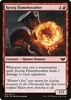
Kessig Flamebreather

Every noncreature spell becomes damage to all opponents. Rocks, Equipment, and interaction contribute as well as your burn spells, making this a better early engine than a setup card with no damage trigger.
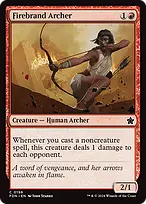
Firebrand ArcherRedundancy for Flamebreather's broad trigger. Both together deal eight to each opponent per noncreature spell with a four-power Ojer. Its low toughness makes your own Pyrohemia and Blasphemous Act dangerous.
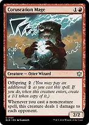
Coruscation MagePay offspring when the extra two mana will still leave resources for spells. The original and its token are independent pingers, so each noncreature spell deals two separate Ojer-sized hits to every opponent.
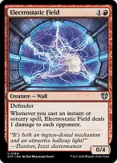
Electrostatic FieldA two-mana pinger that triggers on your own instant and sorcery casts without tapping. It does not trigger on artifacts or other noncreature permanents. Four toughness provides a blocker and lets it survive three Pyrohemia activations if otherwise undamaged.
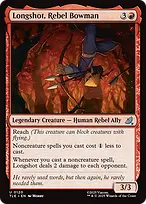
Longshot, Rebel Bowman
Combines an all-opponent noncreature-spell pinger with a generic-cost reduction. The discount helps Equipment and rituals as well as draw spells, but never removes colored costs. Its printed two damage also matters when Ojer is unavailable.
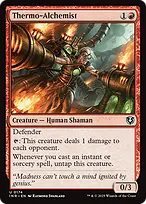
Thermo-AlchemistTap before casting an instant or sorcery, resolve its untap trigger, then tap again when you get priority. With Ojer at four power, each activation hits each opponent for four. Copies of spells are not casts and do not untap it.
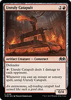
Unruly Catapult
Your retained tap-and-untap engine is a RED artifact creature, so Ojer enhances its damage. Expedite or Swiftfoot Boots allows it to tap the turn it enters; an untap trigger alone does not overcome summoning sickness. Its four toughness helps it survive incidental damage.
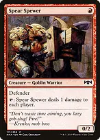
Spear SpewerThe one-mana engine damages you for one but each opponent for Ojer's power. With four players still present, one activation deals four total noncombat damage even without Ojer, enough for Temple of Power's damage requirement.
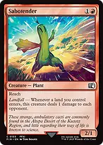
SabotenderEach land entry damages every opponent. A fetchland entering and the Mountain it finds produce two triggers, which is eight damage to each opponent at Ojer power four. Keep a land drop available when your impulse-draw spells might find a land.
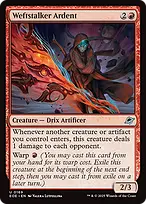
Weftstalker ArdentEvery other creature or artifact entering under your control produces an all-opponent damage event. In particular, every Treasure from Storm-Kiln Artist becomes damage. Warp is a one-red investment for a finishing turn, but exiles Ardent at the next end step and permits recasting it only on a later turn.
Turn casts into more mana

Sol RingAccelerates the generic portion of Ojer and your Equipment but cannot pay Ojer's two red symbols. Arcane Signet, Mind Stone, Fellwar Stone, and Liquimetal Torque provide additional two-mana acceleration. Fellwar Stone supplies red only if an opposing land could produce it; use other colors for generic costs.

Ruby MedallionCuts generic costs from red spells. A discounted two-mana draw spell or ritual is easier to chain with the mana-refund creatures. It does not discount colorless Equipment, equip abilities, or a spell that costs only red.
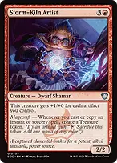
Storm-Kiln ArtistProduces a Treasure whenever you cast OR copy an instant or sorcery. Grapeshot's storm copies each qualify, even though they were not cast. Each Treasure also triggers Weftstalker Ardent. The Artist's artifact-dependent power does not increase Ojer's power.
Raise Ojer's power with minimal delay
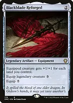
Blackblade ReforgedRetained as the main permanent power boost. With six lands, Ojer is 10/10; use the three-mana legendary equip cost. Its bonus updates with your land count, so sacrificing a fetchland or a Mountain can change pending damage. It becomes unattached if Ojer dies and returns as a land.
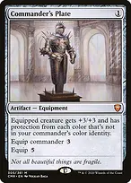
Commander's PlateAdds three power and toughness and protects Ojer from white, blue, black, and green. That sets a seven-damage floor for small pings. Protection does not stop untargeted exile or sacrifice and does not answer red or colorless removal.
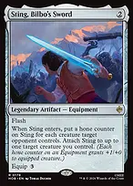
Sting, Bilbo's SwordTwo mana at instant speed can give a large power boost and attach immediately. Target the opponent with the most creatures for its hone counters. Resolve the entry trigger before the damage you need to amplify; once established, the counters do not decrease when that opponent loses creatures.
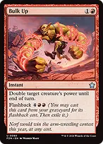
Bulk UpDoubles Ojer's power for the turn, with flashback as a later option. Casting it triggers your pingers before it resolves, so those initial triggers use the old power. Cast it in response to a separate pending damage event or resolve it before the main burn sequence.
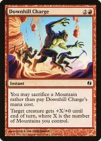
Downhill ChargeCan boost Ojer without spending mana by sacrificing a Mountain. Count Mountains after paying that cost: starting with six Mountains and no other boosts, sacrificing one makes a four-power Ojer nine power. The lost land also reduces Blackblade's bonus. Roiling Vortex deals five damage to you for this no-mana cast, and losing a land is painful if the kill is stopped.
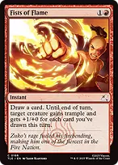
Fists of FlameDraws a card and then adds power equal to the cards you have drawn that turn, including that draw. It normally gives at least +2 after a normal draw step, and scales after The One Ring or Wheel of Fortune. The boost is fixed on resolution, not updated by later draws. If its sole target becomes illegal, the spell does not resolve and you do not draw.

Sting, the Glinting DaggerUsually equip a tap-pinger. It grants haste and untaps the equipped creature at the start of every combat, including opponents' combats. Tap before the untap trigger resolves and again afterward when useful. This can keep Unruly Catapult producing damage outside your own spell turn.
Ojer's power is the reliable scaling method. Opponents choose the order of replacement effects modifying damage to them, so multiplying the printed damage is not automatically a way to multiply Ojer's minimum. Only combat damage actually dealt by the commander counts toward 21 commander damage.
Finish through multiple separate damage events
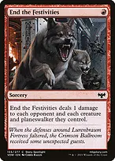
End the FestivitiesOne mana damages every opponent and their creatures and planeswalkers. Only the player damage is increased by Ojer. Tectonic Hazard performs the same cheap all-opponent role without hitting planeswalkers.
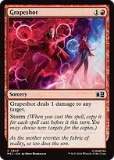
GrapeshotStorm creates one copy for each spell cast before it that turn, counting all players' spells. Every original or copy aimed at an opponent is a separate hit enhanced by Ojer. Five earlier spells produce six total hits; at eight power that is 48 damage TOTAL to distribute among chosen targets, not 48 to each opponent. Copies trigger Storm-Kiln Artist but do not retrigger cast pingers, mana-refund cast abilities, or your tap-pingers' untaps.

Mithril CoatMakes Ojer indestructible and attaches through its entry trigger when flashed in. It lets you keep using Pyrohemia after ordinary creatures would die. It does not protect against exile, bounce, sacrifice, or zero toughness.
A straightforward established-board kill uses Ojer, Kessig Flamebreather, and six lands with Blackblade Reforged already attached. Ojer starts at ten power. Cast Bulk Up: Flamebreather's cast trigger deals ten to each opponent, then Bulk Up makes Ojer twenty power. Cast Fiery Confluence choosing the player-damage mode three times: Flamebreather deals twenty to each opponent, followed by three twenty-damage Confluence events. The two spells cost six mana and deal up to 90 to each opponent if the engine survives. The Equipment setup and the entire existing board are prerequisites.
The new storm payoff uses Ojer, Storm-Kiln Artist, and Weftstalker Ardent. Five spells before Grapeshot produce six Grapeshot instances and six Artist Treasures. Ardent converts those Treasures into six hits of four to every opponent, or 24 each, before counting Grapeshot's own damage and other cast triggers. This needs a real sequence of spells and the full multi-card engine; nothing is infinite.
Maintain pressure against life gain and refills
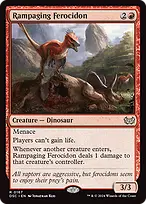
Rampaging FerocidonShuts off life gain and punishes opponents' creature entries with Ojer-sized damage. Your own creatures still hurt you for one. It does not damage the entering creatures, and its life-gain restriction also applies to you.
Refill and use the graveyard for a second burst

The One Ring
Rebuilds your hand and gives you a turn of protection when cast. That protection can prevent damage from your symmetrical burn or Roiling Vortex to you, but it does not protect your creatures or prevent life loss from burden counters. Larger draws increase a subsequently resolved Fists of Flame.
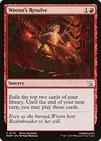
Wrenn's ResolveTwo cards playable through your next turn. Reckless Impulse is the redundant version, and Light Up the Stage can do the job for one red after an opponent has already lost life. A trigger from casting Light Up the Stage comes too late to enable its own spectacle cost.

Faithless LootingFilters excess lands and awkward answers, with flashback for another pass. It is card selection rather than net advantage. Discarding an instant or sorcery can supply Past in Flames, but preserve enough mana and protection to use that later.
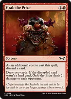
Grab the PrizeDiscard as an additional cost and draw two. If the discarded card was a nonland, also deal two to each opponent, enhanced by Ojer. Discarding a land still draws but causes no damage. A counterspell can leave you down both cards because the discard has already been paid.
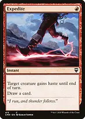
ExpediteOne red gives a creature haste and draws a card. A newly cast Unruly Catapult can activate after Expedite resolves, generating immediate damage while the spell itself triggers your other engines. It needs a legal creature target; if its only target becomes illegal, the draw is lost.
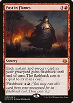
Past in FlamesGives flashback to instant and sorcery cards already in your graveyard when it resolves. Recast rituals to fund draw, pump, and burn while cast pingers trigger again. You still pay costs, and flashed-back spells are exiled instead of returning to the graveyard. Cards reaching the graveyard later do not automatically gain flashback. Downhill Charge cast via this flashback uses its mana cost, not its alternative Mountain-sacrifice cost. This is finite finishing fuel and recovery.
Find what is missing and rebuild the commander

GambleFind the function you need: a ritual to bridge the mana gap, protection, The One Ring for cards, Fiery Confluence or Grapeshot to finish, or Past in Flames for a stocked graveyard. Random discard means the tutor is not guaranteed; a larger hand improves the chance of retaining the selected card.
When Ojer dies, leave it in the graveyard to let its trigger return it tapped as Temple of Power. Moving it to the command zone prevents that return. Exile and bounce do not trigger it, and Equipment remains behind unattached. Temple needs four total noncombat damage from red sources you controlled that turn; damage to you, players, or creatures can contribute. Its activation also requires three mana from other sources, an untapped Temple, and sorcery timing.
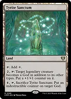
Tyrite SanctumRetained as requested. It can add a +1/+1 counter or sacrifice itself for four mana to put an indestructible counter on Ojer. Ojer is already a God, so the first ability is not a prerequisite for the indestructible counter. Its colorless mana does not pay Ojer's red symbols.

Nykthos, Shrine to NyxConverts red devotion into finishing mana. Include its two-mana activation cost and tapping Nykthos in your calculation; low devotion does not make this acceleration. Alongside Tyrite Sanctum, it is one of only two lands naturally restricted to colorless before other abilities are considered.
Sokenzan normally supplies untapped red. Channeling Sokenzan, Crucible of Defiance gives two blockers or two Weftstalker Ardent triggers; the tokens are colorless but Ardent is the red damage source.
Opening hands and sequencing
There are 34 normal lands plus two modal land/spell cards, giving 36 potential land plays. The 27 basic Mountains support Downhill Charge and Ojer's two red symbols. The four fetchlands provide double Sabotender triggers, rather than meaningful deck thinning.
Keep three lands, a cheap damage source, and either an accelerator or affordable card access. Two-land hands need a dependable route to more mana. Mulligan hands full of Equipment and expensive engines with nothing productive to do first.
A stable opening is turn-one Spear Spewer, a turn-two two-mana rock, and turn-three Ojer with two available red sources. Spewer can immediately deal four to every opponent. A ritual alternative is three lands plus Seething Song to cast Ojer with one red left; Desperate Ritual reaches Ojer with no mana left. Rituals consume a card, so prefer them when a ready pinger or protection makes the speed worthwhile.
For a finishing turn, establish the pingers and a refund creature first, then sequence power boosts, rituals, and card access. Tap Catapult or Thermo-Alchemist before each instant or sorcery, resolve the untap, and activate again at a useful priority window. Cast Expedite to make a fresh tap-pinger usable that turn.
Play your draw and setup spells before Grapeshot when safe, and track actual spells CAST rather than copies. Resolve a boost before the damage it is meant to amplify. Fists of Flame wants earlier draws; Past in Flames wants the ritual and burn cards in the graveyard before it resolves.
Count damage to each opponent separately, your own Roiling Vortex or Pyrohemia damage, the creatures that will survive Pyrohemia, and mana held for protection. Do not spend Downhill Charge's Mountain or all your ritual mana on a speculative kill if one removal spell would leave you unable to rebuild.